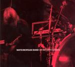

| Artist: | Mats/Morgan Band |
| Title: | On Air With Guests |
| Label: | Ultimate Audio Entertainment |
| Length(s): | minutes |
| Year(s) of release: | 2002 |
| Month of review: | [03/2004] |
| 1) | En Schizofrens Dagbok | 6.15 |
| 2) | Spök-jingle | 0.49 |
| 3) | Hollmervalsen | 8.00 |
| 4) | Knut-jingle | 0.13 |
| 5) | Chicken | 7.03 |
| 6) | Jigsaw-jingle | 0.21 |
| 7) | Sol Niger Within | 5.39 |
| 8) | Advokaten | 7.30 |
| 9) | Watch Me-jingle | 0.13 |
| 10) | Min Häst | 6.49 |
| 11) | Etage A-41 | 6.02 |
| 12) | Dagens Övning-jingle | 0.16 |
| 13) | She's Louder Than Me, But I've Got The Microphone | 4.21 |
| 14) | Baader Puff/Paltsug | 3.25 |
| 15) | Mats-jingle | 1.04 |
| 16) | Ta Ned Trasan | 8.26 |
| 17) | Hard To Find-jingle | 0.11 |
| 18) | Trum-jingle | 0.27 |
Hollmervalsen is a more melodic, somewhat waltzy affair, with some nice soothing tones the keyboards and a burping bass line. The end result is a frolic piece of music, which, similarly to the band Spastic Ink, might be used to accompany Tom and Jerry type cartoons. At one point the pace drops out of the song like the proverbial bottom, but after a short recap it is pace time again. The keyboards give the music a Canterbury sheen, but rhythmically this is a lot more nervous and not as warm. And extremely tight as well.
After a meander jingle in seventies groove style we move right into the groovy Chicken. The sax influence is strongly apparent, and although it may not be everybody's cup of tea (like mine), the groove is strong. The power creeps in more along the track, and the guitar is very seventies.
On Sol Niger Within the power guitars set in for some energetic playing. The is now more in the line of the heavier complex metal bands like Meshuggah et al. The rhtym guitar is the main attraction melody wise, while the drums fill up all the niches it occasionally leaves.
Simon Steensland (and Spoonman) help out on Advokaten, the former responsible for some really good albums of his own (on the same label in fact). This is sparser affair where percussion plays a large role, almost the only role to play, except for the spooky Theremin.
Min Häst is a rather bleepy affair built around a humourous tune. The middle part is compartively fiddly with the melody having left the building. Etage A-41 is busy jazz rock with some mean guitar and a staccato of drums where Mats plays some flashy solo's giving the music more of a Cuneiform feel. The jumpiness of the music also helps cater to that impression. The lastfew is comparatively friendly and moodly with bubbly bass and willowy keys.
She's Louder Than Me, But I've Got The Microphone is the most mainstream song on this album. Featuring Jimmy Âgren's band the music is strongly bluesy here, although not without plenty of signature changes. The drums have a train like quality here. The guitar sound is quite Hendrixian (and whoever followed him).
Baader Puff/Paltsug is a humourous ditty very lightfooted and quirky. One can see the hands of Morgan dancing lightly over the drums while Mats adds his two cents. Later, the guitar comes in as well and the sound becomes more involved and fuller, nudging closer to jazzrock.
The final complete track Ta Ned Trasan, which could have come from one of many Cuneiform releases. More than it is a song, this a tune with a memorable theme and the by now well-known ingredients of an active drummer etc.